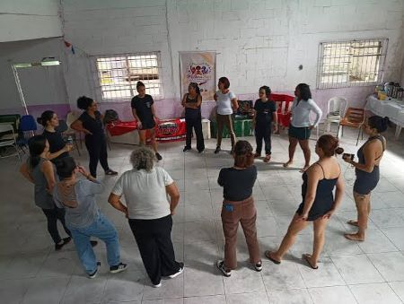

Projeto: Mulheres do Amanhã

Este projeto oferece um ciclo completo de oficinas focadas em oratória, liderança feminina e inteligência emocional...
Como a comunidade contribui: Sendo uma mentora voluntária ou participando como ouvinte nas bancas finais de apresentação das alunas.